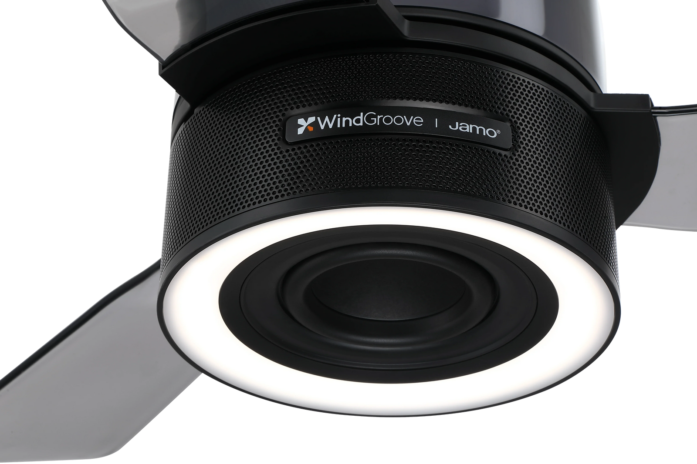

At a glance
- A lower-priced fan-light-speaker fixture can be a sensible choice when its size, light and controls suit the room.
- AirFi One offers a different audio design: a dedicated woofer, two mid-high drivers and tuning developed with Jamo.
- Compare models within the mounting format the room needs. A 42-inch downrod fan and a 48-inch flush-mount fan solve different fit problems.
- Budget for the fixture and the work to install it, then check how service is handled.
The three budget ceiling fans with Bluetooth speakers below cost less than $200. AirFi One costs $499. All four provide a fan, a light and Bluetooth music. AirFi One adds a three-driver audio system developed with Jamo in a 48-inch flush-mount fixture. The main question is whether that audio design is worth the extra spend for the room.
Compare three budget models with AirFi One
The shortlist covers three budget models and WindGroove AirFi One. Prices are for the fixtures; installation adds to each total.
| Model | Product price | Size and mount | Light and control features |
|---|---|---|---|
| Sofucor KYLY42202 | $159.99 | 42-inch retractable blades; downrod mount. | White and RGB lighting; remote and i-Link app. |
| Villabrot VB03CFL605NW | $190.56 | 52-inch span; downrod mount. | LED light kit and remote control. |
| Orren Ellis W118472197 | $142.99 for the black flush-mount option | 52-inch span; selected flush-mount variant. | White and ambient color lighting; remote and Smart Light Pro app. |
| WindGroove AirFi One | $499 | 48-inch span; flush mount. | White main light and RGB ring; remote and optional Wi-Fi app controls. |
On the Orren Ellis listing, choose the finish and mount together. The price shown here is for the black flush-mount option.
What is worth paying more for?
A speaker system that is central to the product
AirFi One’s system was developed with Jamo: a 5.25-inch woofer handles bass, while two 1.5-inch drivers cover the middle and upper frequencies. DSP tuning and EQ settings shape the sound. The three budget listings give less detail about their speakers. Their Bluetooth label describes the music connection, rather than the sound.

For a room used often for music, AirFi One’s speaker system is the main reason to shortlist it. Compare the sound with the same song at similar volume. Follow the bass line and listen for the voice over the instruments from the main seat.
A mount that fits the ceiling
AirFi One and the selected Orren Ellis option use flush mounts. Sofucor and Villabrot use downrods. For a low ceiling, start with the two flush models. For a tall ceiling, a downrod can bring the blades closer to the people below. Use the room-fit guide to calculate the installed blade height for each.
Light that works throughout the day
AirFi One offers a 1,200-lumen main light, three white-light settings and 10–100% dimming, plus a separate RGB ring. The lower-priced Sofucor and Orren Ellis models also offer white and color lighting. Color effects alone give little reason to pay more. In a bedroom, compare how low the light dims and how it is controlled from bed.
Compare the parts that affect daily use
| Buying criterion | What the comparison tells you |
|---|---|
| Airflow | Sofucor lists 4,500 CFM; AirFi One lists up to 4,500 CFM. Equivalent test conditions are not established, so treat these as each seller’s specifications. Comparable airflow figures for the selected Villabrot and Orren Ellis listings are not confirmed. |
| Music connection | All four list Bluetooth speakers. For AirFi One, the app handles device controls while music comes from a paired Bluetooth source. |
| Audio detail | AirFi One publishes a three-driver layout and 80 W RMS output. Comparable driver and rated-output details for the three selected budget listings are not confirmed. |
| Service | For all four, establish who supplies replacement light, speaker and control parts, and who pays for removal and refitting. The higher fixture price alone establishes no service advantage. |
AirFi One’s fan, lights and speaker work independently, so music can play with the light off. For another model, look for that behavior in its manual or a demonstration.
When the budget model is the better choice
A less expensive fixture can be a good match for a guest room used only occasionally, or a room where music is a small part of the purchase. The Sofucor is also worth considering when its smaller blade span fits the available space and the ceiling suits its downrod mount.
If the current fan already provides the right breeze and light, adding a speaker is another route. The speaker can then be chosen for its sound and placed near the main seat. The integrated-versus-separate guide compares that route with a complete fixture replacement.
AirFi One makes a stronger case when the room needs a flush-mount fan and music justifies spending roughly $300–$356 more. For occasional background audio, a suitable budget model leaves that money available for other parts of the room.
Put the full project on one quote
List the fixture, labor and any needed support or mounting parts in each quote. Name the exact model and mount. Replacing an ordinary ceiling light can require new fan support; replacing a fan may allow suitable existing support to be reused.
For service, ask what happens if the light or speaker develops a fault. Does support send a part, arrange a repair or replace the fixture? Who handles removal and refitting? Include those labor costs in the comparison; a replacement fixture can still require a second installation visit.
Questions about upgrading
Does a higher price guarantee better sound?
No. AirFi One gives more detail about its audio design, including the drivers and Jamo collaboration. To judge the sound, hear the models at similar volume with the same music.
Can a 52-inch fan be compared with a 42-inch model?
Yes, if both fit the room. The 52-inch model needs more space around its blades. Check the span and installed height first, then compare the features and price.
What should I check before ordering a replacement?
Confirm the mounting format, full blade clearance, ceiling support and control arrangement. Give the installer the new model’s instructions, even when the current fitting is already a fan.